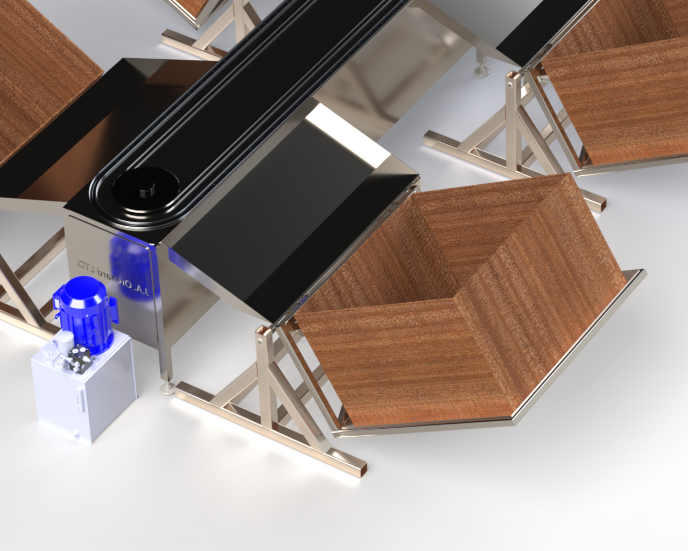

From Concept to Final Model
Our Capstone team developed a modular, high-throughput automated sorting system tailored for JA Orchards LTD,an orchard in urgent need of a replacement solution following the closure of their regional sorting facility. The goal was to sort apples at a rate of 100 apples per minute using pre-assigned grades from an external vision classifier. Our system ensures precise, impact-mitigated routing of apples into designated bins through electromechanical tilting trays and damped collection paths.
The final design includes a custom elliptical guide rail conveyor system with 100 modular carriages. These carriages are fitted with food-safe high-density polyethylene trays mounted using PTFE sleeve bearings,ideal for dirty and humid orchard environments. A solenoid-activated over-center mechanism allows each tray to tilt precisely once it reaches its designated station, gently diverting the apple into a bin.
Once tilted, apples land on a silicone impact-damping tray designed to distribute kinetic energy through curvature and friction, reducing bruising. These trays also integrate a gate mechanism to prevent drops during downtime or bin swaps. Storage crates,standard 48" x 48" x 28",are mounted on hydraulically actuated frames that gradually lower as they fill, maintaining a gentle receiving angle for each apple.
The images below showcase the physical configuration of the system:

A complete render of the elliptical sorter conveyor, showing the carriages navigating around conveyor. Each unit is aligned with one of seven bins placed for optimal forklift access.
A close-up of the tilting tray mounted on its carriage, highlighting the over-center spring mechanism and the aluminum frame that keeps the system food-safe and rust-resistant.


The silicone damping trays are designed with a shallow curvature to absorb impacts. The locking gate at its edge is visible, preventing apples from dropping prematurely into bins not yet in place.
The crate-tilting mechanism powered by dual-acting hydraulic cylinders is shown above. It ensures apples roll into crates gently, even as crates fill and their center of mass shifts.
